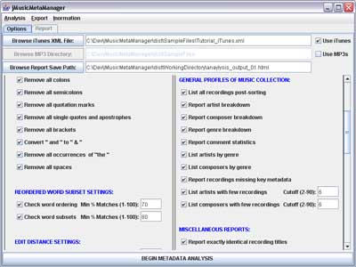

| Options Panel Overview |
|---|
The Options Panel allows the user to set the preferences and parameters controlling metadata error detection processing and report generation.
The Options Panel will originally be set to default settings. These can be restored at anytime by selecting the Restore Default Options item from the Analysis Menu.
Certain settings will have an impact on other settings. As a result, any change made to the Options Panel may cause jMusicMetaManager to automatically grey out or activate certain options as appropriate. Any greyed out options are not relevant under the currently selected options, and their settings will be ignored unless other options are changed to activate them again.
This panel is divided into three sections. The top section allows the user to specify the source(s) of the metadata that isto be analyzed, as well as where to save the reports that are to be generated. The middle section allows the user to set specific processing parameters. The bottom section consists of the Begin Metadata Analysis button, which initiates analysis and report generation based on the chosen settings in the top two sections.

Figure 1: Screenshot of the Options Panel.
Top Section of the Options Panel - Metadata Sources
The top section of the Options Panel is itself divided into three rows. Each row consists of a button allowing the user to browse to an appropriate disk path, an editable text field showing the current disk path and, in the case of the top two rows, check boxes that allow the user to disable the matching row.
jMusicMetaManager can acquire metadata from two possible sources, namely Apple iTunes XML files or the ID3 tags of MP3 files. The first row (Browse iTunes XML File) allows the specification of the path of an iTunes XML file. The second row (Browse MP3 Directory) allows the user to specify a directory that will be searched, along with all of its subdirectories, for MP3 files, from which metadata will be extracted. The Use iTunes and Use MP3s check boxes allow the user to specify which (or both) of these sources of metadata will be examined. In general, iTunes files tend to be more reliable, partly because of their nature and partly because the third-party ID3 parser used by jMusicMetaManager can be buggy for some ID3 versions.
Although iTunes does not make it possible to specify multiple genres per recording, jMusicMetaManager does make it possible to have multiple genres per recording by interpreting occurrences of “ + ” in the Genre field as a delimiter. So, for example, a Genre of “Jazz + Blues” in an iTunes file would be interpreted as two different genres by jMusicMetaManager, namely “Jazz” and “Blues”.
It should be noted that, if both iTunes and ID3 sources are used, and if the metadata for an MP3 file corresponds to an entry with the same path in the iTunes file, then the two sets of metadata will be combined together into metadata for a single recording, with the metadata from the iTunes source being used in the case of any fields that are both present but non-identical. The final set of recordings that are analyzed will therefore consist of all recordings referred to in the iTunes file but not in the given directory or its subdirectories, all MP3 files found in the given directory or its subdirectories but not referred to in the iTunes file, and one entry for each pair of recordings found in both sources.
The third row of the top section of the Options Panel (Browse Report Save Path) allows the user to specify where the root file of the HTML report to be generated is to be saved. A directory containing further report files will also be created in the same directory. The reports generated are frames-based, and the root file contains the information needed to load the frames. The file specified by the path in this field must have a .html extension.
Middle Section of the Options Panel - Processing Settings
The central section of the Options Panel allows the user to set analysis parameters and report preferences. Note that the input to all text boxes in this section must be integers and must be in the specified range, or an error message will be generated. The left side of the central section contains processing preferences and the right side contains preferences regarding the reports to be generated. This central section of the Options Panel is further described in the Option Panel Processing Settings and the Options Panel Report Settings sections of this manual.
Bottom Section of the Options Panel - Begin Metadata Analysis Button
The Begin Metadata Analysis button initiates processing using the metadata specified in the top two rows of the Options Panel and the preferences specified in its central section. A report is saved to the path given in the third row of the Options Panel, and may also be viewed directly in the Report Panel once processing is complete. The user will automatically be notified of any invalid settings when analysis is initiated, and will have the opportunity to correct them at that point before proceeding with analysis and report generation.